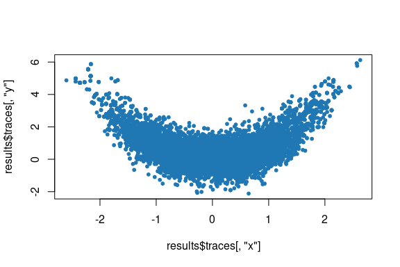

rmcmc is an R package for simulating Markov chains using the Barker proposal to compute Markov chain Monte Carlo (MCMC) estimates of expectations with respect to a target distribution on a real-valued vector space. The Barker proposal, described in Livingstone and Zanella (2022), is a gradient-based MCMC algorithm inspired by the Barker accept-reject rule. It combines the robustness of simpler MCMC schemes, such as random-walk Metropolis, with the efficiency of gradient-based methods, such as the Metropolis adjusted Langevin algorithm.
The key function provided by the package is sample_chain(), which allows sampling a Markov chain with a specified target distribution as its stationary distribution. The chain is sampled by generating proposals and accepting or rejecting them using a Metropolis-Hasting acceptance rule. During an initial warm-up stage, the parameters of the proposal distribution can be adapted, with adapters available to both: tune the scale of the proposals by coercing the average acceptance rate to a target value; tune the shape of the proposals to match covariance estimates under the target distribution. As well as the default Barker proposal, the package also provides implementations of alternative proposal distributions, such as (Gaussian) random walk and Langevin proposals. Optionally, if BridgeStan’s R interface, available on GitHub, is installed, then BridgeStan can be used to specify the target distribution to sample from.
Installation
The latest published release version of rmcmc on CRAN can be installed using
install.packages("rmcmc")Alternatively, the current development version of rmcmc can be installed using
# install.packages("devtools")
devtools::install_github("UCL/rmcmc")Examples
The snippet below shows a basic example of using the package to generate samples from a normal target distribution with random scales. Adapters are used to tune the proposal scale to achieve a target average acceptance probability, and to tune the proposal shape with per-dimension scale factors based on online estimates of the target distribution variances.
library(rmcmc)
set.seed(876287L)
dimension <- 3
scales <- exp(rnorm(dimension))
target_distribution <- list(
log_density = function(x) -sum((x / scales)^2) / 2,
gradient_log_density = function(x) -x / scales^2
)
proposal <- barker_proposal()
results <- sample_chain(
target_distribution = target_distribution,
initial_state = rnorm(dimension),
n_warm_up_iteration = 10000,
n_main_iteration = 10000,
proposal = proposal,
adapters = list(scale_adapter(), shape_adapter("variance"))
)
mean_accept_prob <- mean(results$statistics[, "accept_prob"])
adapted_shape <- proposal$parameters()$shape
cat(
sprintf("Average acceptance probability is %.2f", mean_accept_prob),
sprintf("True target scales: %s", toString(scales)),
sprintf("Adapter scale est.: %s", toString(adapted_shape)),
sep = "\n"
)
#> Average acceptance probability is 0.58
#> True target scales: 1.50538046096953, 1.37774732725824, 0.277038897322645
#> Adapter scale est.: 1.5328097767097, 1.42342707172926, 0.280359693392091As a second example, the snippet below demonstrates sampling from a two-dimensional banana shaped distribution based on the Rosenbrock function and plotting the generated chain samples. Here we use the default values of the proposal and adapters arguments to sample_chain(), corresponding respectively to the Barker proposal, and adapters for tuning the proposal scale to coerce the average acceptance rate using a dual-averaging algorithm, and for tuning the proposal shape based on an estimate of the target distribution covariance matrix. The target_distribution argument to sample_chain() is passed a formula specifying the log density of the target distribution, which is passed to target_distribution_from_log_density_formula() to construct necessary functions, using stats::deriv() to symbolically compute derivatives.
library(rmcmc)
set.seed(651239L)
results <- sample_chain(
target_distribution = ~ (-(x^2 + y^2) / 8 - (x^2 - y)^2 - (x - 1)^2 / 100),
initial_state = rnorm(2),
n_warm_up_iteration = 10000,
n_main_iteration = 10000
)
plot(results$traces[, "x"], results$traces[, "y"], col = "#1f77b4", pch = 20)